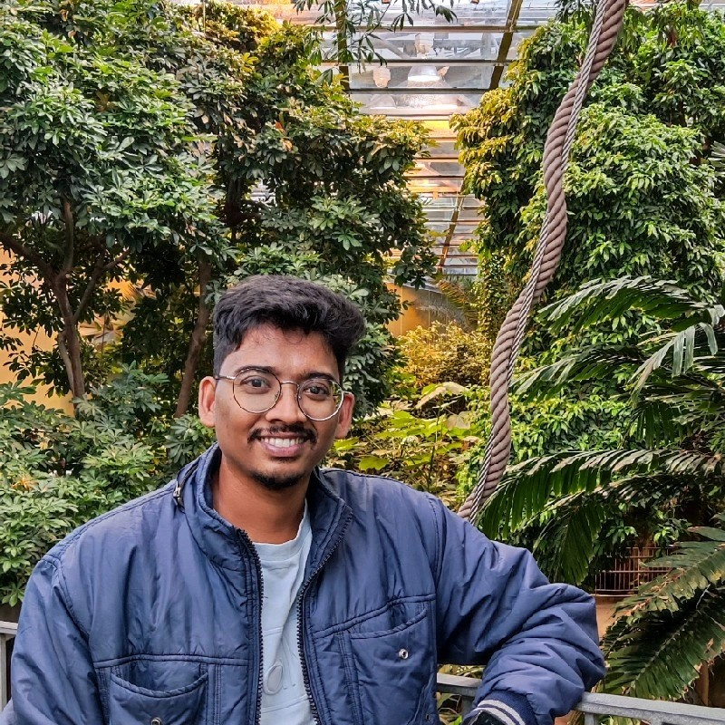

Summary
An Assistant Professor turned developer with a demonstrated history of working in the IT, education, and management industry. Skilled in Oracle GoldenGate 12, 19.1, 21, Oracle databases, SQL Server, Microsoft Azure, Internet of Things, Big Data, Python (Programming Language), C++, and Machine Learning.
Education
MEng in Electrical and Computer Engineering (2023-2025)
Concordia University, Montreal, Canada
MBA in IT Management and Project Management (2021-2023)
BVDU Pune, India
MTech in Optoelectronics and Laser Technology (2012-2014)
PRSU, Raipur, India
BTech in Electronics and Telecommunication Engineering (2008-2012)
NIT, Raipur, India
Work experience
Associate Projects (2022-2023)
Cognizant Technology Solutions Pvt. Ltd, Hyderabad, India
Key Responsibilities
-
Replicating data from PeopleSoft ESA/HCM/FMS/EAM (Oracle OCI) sources to Enterprise Data Store (EDS) and
Central Repository Store (CRS) targets (MS SQL server) via Oracle Goldengate.
-
Provisioning data to multiple One Cognizant apps from CRS and EDS Datastores.
-
Design, development, and deployment of Oracle Goldengate (OGG) solutions in Azure including Analysis, ETL,
Data Quality, and Capacity management following the best practices.
Assistant Professor (2016-2022)
BIT Durg, India
Key Achievements
-
Supervised 19 groups (40 students) undergraduate (B.Tech) dissertation and co-supervised 1 graduate (M.Tech)
student dissertation. The findings of the studies were published in 3 International Journals and 8 national
conference proceedings. Developed smart and cost-effective prototypes for detecting illegal parking, contactless
delivery drone, and power theft detection in India based on the Internet of Things.
-
Finalists of Smart India Hackathon (Hardware Edition) 2019. A prototype was developed to estimate the weight
of a patient in emergency situations. Coding was done in MATLAB and the results were fed to the Artificial Neural
Networks (ANN) model to estimate the weight. The findings of the study generated huge interest in medical
research centers and were featured in the national media.
-
Institute level Administrator for both Edx and Coursera for Campus initiatives for the sessions 2020 -2022. Total
learners (students & faculty): 2300+, Course completions: 5500+, Total approx. hours spent: 48000+. Event Incharge
of OJAS - a national-level techno-cultural-sports fest in the years 2017 & 2019. Gained invaluable
experience in leadership, team building, management, marketing, and event management.
State Coordinator (2012-2014)
CGEGF, India
Key Achievements
-
Traveled extensively in Chhattisgarh State addressing the students on issues like university violence, discrimination
based on gender, religion, ethnicity, and class at various schools, colleges, and universities with a biblical mindset.
-
Had conversations with more than 7000 school and college-going students on university/college life, academic
excellence, overcoming addictions, ragging, and gender equality through seminars, camps, and conferences.
-
Mentored 24 underprivileged students personally encouraging and helping them in their holistic development. These
students are presently working in various public and private sectors in India taking leadership roles in their workplaces.
Skills
- Programming Languages – Oracle databases (10g,11g,12c), SQL Server, UNIX Shell Scripting, Power BI, Python, C,
C++, PostgreSQL
- Software – Oracle Golden Gate (12c,19c,21c), SQL Server Mgt. Studio, Informatica PowerCenter 10.2.0, Putty,
MATLAB, LabView, Multisim, Origin, MS Office Suite
- Cloud Technologies – Microsoft Azure, Amazon Web Services
- OS – Linux, UNIX, Windows XP, 7, 8, 10, 11, Windows Server 2008/2012/2016, MacOS Catalina/Sierra
- Excellent communication skills and people management skills
- Willing to learn new things and can multitask with a customer-centric attitude.
Certifications
- Microsoft Azure Database Administrator (DP-300)
- Microsoft Azure Data Fundamentals (DP-900), Microsoft Azure Fundamentals (AZ-900)
- Professional certificates in Human-Computer Interaction, Introduction to Python Programming, Health
Informatics on FHIR offered by GTx, and Electric Vehicles offered by DelftX in collaboration with Edx
- Professional certificates in IT Support offered by Google, and Visual Business Analytics offered by SAS in
collaboration with Coursera
Hobbies Contact